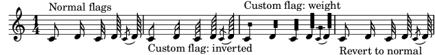

| [ << Tweaks and overrides ] | [Top][Contents] | [ Paper and layout >> ] |
| [ < Generate special note head shapes ] | [ Up: Tweaks and overrides ] | [ Grob をスキップするグリッサンド > ] |
符尾をカスタマイズする
Flag Grob の stencil プロパティをカスタム Scheme 関数にセットし、符尾のグリフを生成することができます。
#(define-public (weight-flag grob) (let* ((stem-grob (ly:grob-parent grob X)) (log (- (ly:grob-property stem-grob 'duration-log) 2)) (is-up? (eqv? (ly:grob-property stem-grob 'direction) UP)) (yext (if is-up? (cons (* log -0.8) 0) (cons 0 (* log 0.8)))) (flag-stencil (make-filled-box-stencil '(-0.4 . 0.4) yext)) (stroke-style (ly:grob-property grob 'stroke-style)) (stroke-stencil (if (equal? stroke-style "grace") (make-line-stencil 0.2 -0.9 -0.4 0.9 -0.4) empty-stencil))) (ly:stencil-add flag-stencil stroke-stencil))) % Create a flag stencil by looking up the glyph from the font #(define (inverted-flag grob) (let* ((stem-grob (ly:grob-parent grob X)) (dir (if (eqv? (ly:grob-property stem-grob 'direction) UP) "d" "u")) (flag (retrieve-glyph-flag "" dir "" grob)) (line-thickness (ly:staff-symbol-line-thickness grob)) (stem-thickness (ly:grob-property stem-grob 'thickness)) (stem-width (* line-thickness stem-thickness)) (stroke-style (ly:grob-property grob 'stroke-style)) (stencil (if (null? stroke-style) flag (add-stroke-glyph flag stem-grob dir stroke-style ""))) (rotated-flag (ly:stencil-rotate-absolute stencil 180 0 0))) (ly:stencil-translate rotated-flag (cons (- (/ stem-width 2)) 0)))) snippetexamplenotes = { \autoBeamOff c'8 d'16 c'32 d'64 \acciaccatura {c'8} d'64 } { \time 1/4 <>^"Normal flags" \snippetexamplenotes <>_"Custom flag: inverted" \override Flag.stencil = #inverted-flag \snippetexamplenotes <>^"Custom flag: weight" \override Flag.stencil = #weight-flag \snippetexamplenotes <>_"Revert to normal" \revert Flag.stencil \snippetexamplenotes }

| [ << Tweaks and overrides ] | [Top][Contents] | [ Paper and layout >> ] |
| [ < Generate special note head shapes ] | [ Up: Tweaks and overrides ] | [ Grob をスキップするグリッサンド > ] |